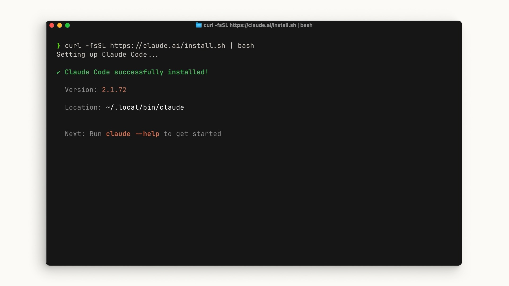
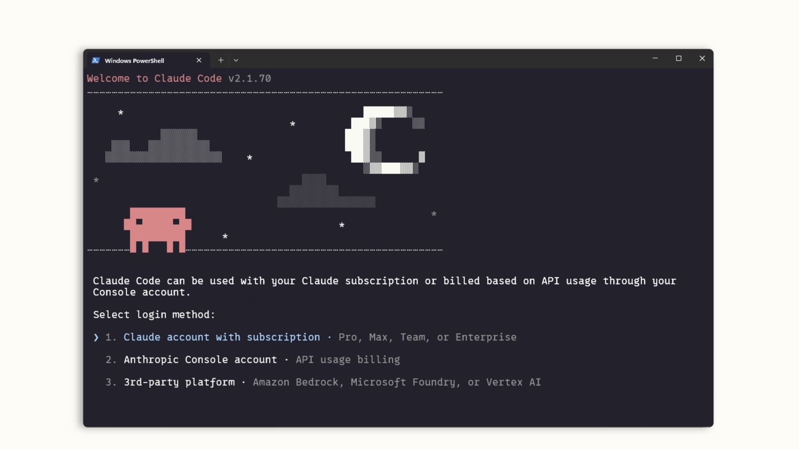
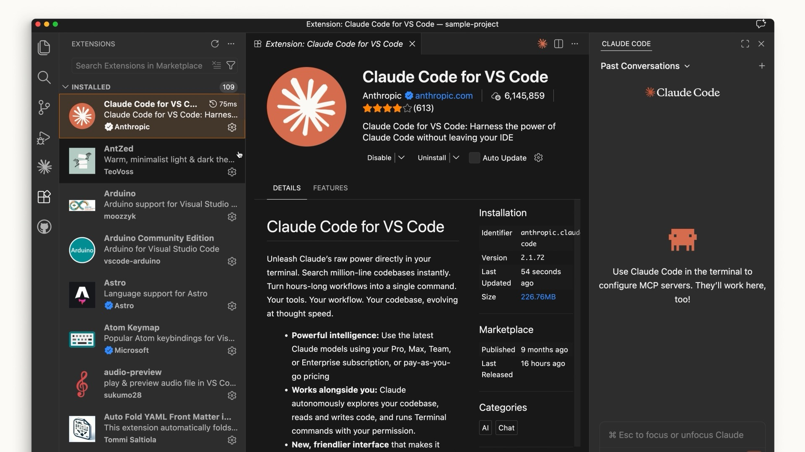
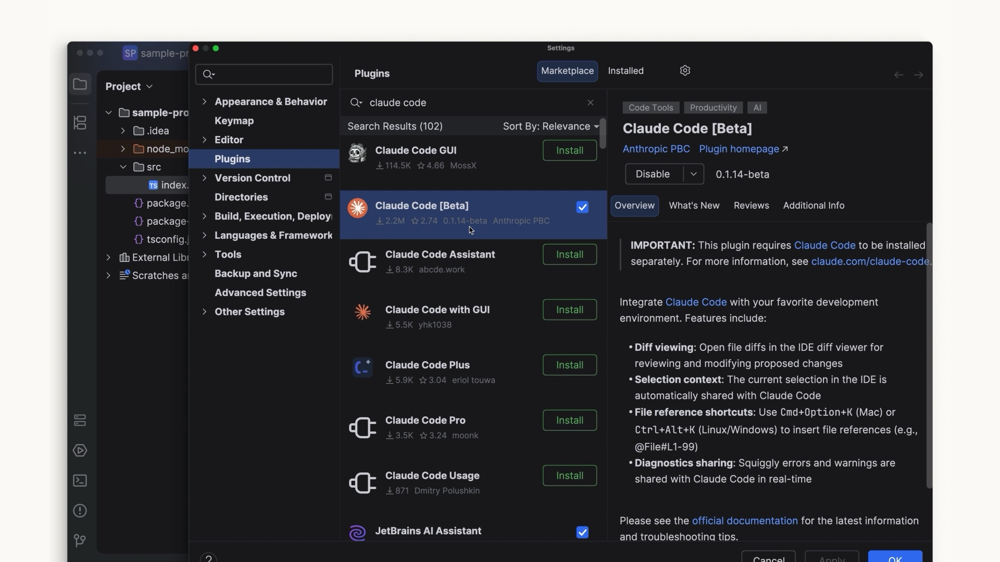
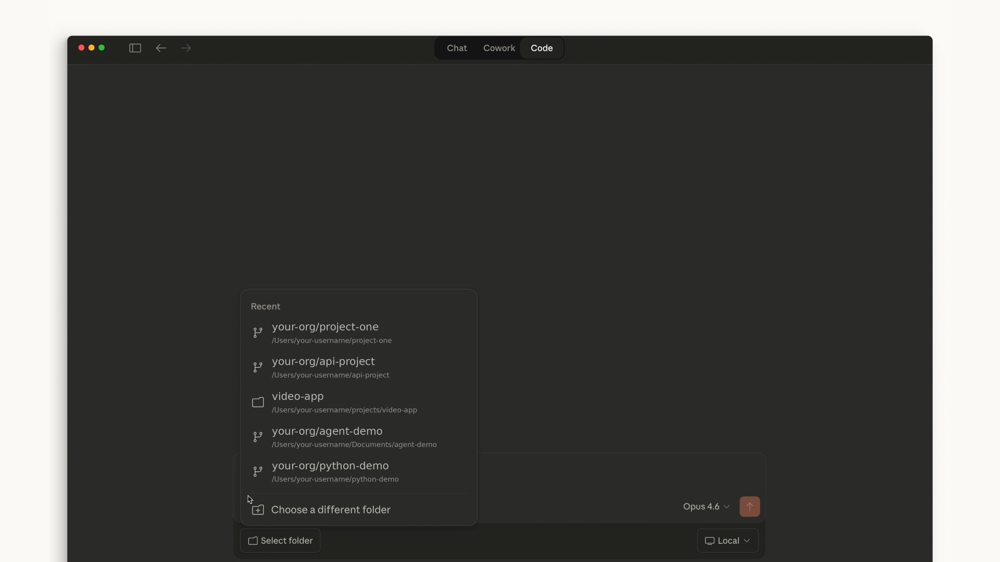
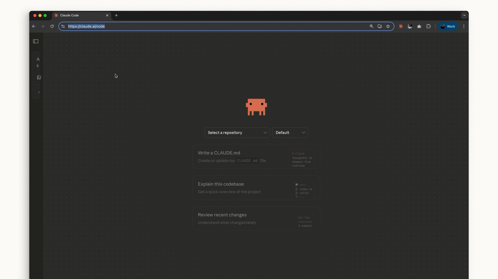

Установка Claude Code
Чему научитесь
Видео 3:01 и текст урока
К концу урока вы сможете:
- установить Claude Code в терминале на macOS, Linux, WSL и Windows и запустить его командой
claudeв папке проекта; - подключить Claude Code к VS Code и к IDE от JetBrains;
- найти Claude Code в приложении Claude Desktop и в браузере на
claude.ai/code; - выбрать, где работать с Claude Code: в терминале, в IDE, в Claude Desktop или в вебе.
Видео и текст урока.
Claude Code легко установить, где бы вы ни хотели с ним работать: в терминале, в браузере или в IDE.
Нужен план Pro, Max, Ultra, Team или Enterprise, аккаунт Claude Console или доступ через поддерживаемого облачного провайдера, например Amazon Bedrock. В бесплатный план Claude Code не входит.
Терминал
В macOS, Linux или WSL выполните в терминале:
curl -fsSL https://claude.ai/install.sh | bash
Если вам привычнее Homebrew, выполните brew install --cask claude-code, но учтите: при такой установке Claude Code по умолчанию не обновляется сам.
В Windows выполните эту команду в PowerShell — там приглашение командной строки начинается с PS:
irm https://claude.ai/install.ps1 | iex
А в CMD — вот эту:
curl -fsSL https://claude.ai/install.cmd -o install.cmd && install.cmd && del install.cmd
Можно также выполнить winget install Anthropic.ClaudeCode, но, как и при установке через Homebrew, по умолчанию Claude Code не будет обновляться сам.

curl прошла успешно.После установки должна заработать команда claude. Если система её не находит, откройте новое окно терминала, а если и это не поможет — найдите текст ошибки на странице Troubleshoot installation and login. Перейдите в папку своего проекта и выполните:
claude
Сначала вы пройдёте несколько шагов начальной настройки — например, выберете цветовую тему и войдёте в аккаунт Claude (Pro, Max, Ultra, Team или Enterprise) либо по API-ключу. Если у вашей организации есть аккаунт Claude Enterprise, обязательно выберите этот вариант.

В какой бы папке вы ни запустили claude, он получит доступ к этой папке и ко всем её подпапкам.
Visual Studio Code
Откройте панель Extensions и найдите «Claude Code». Выберите расширение от Anthropic с синей галочкой верификации и нажмите Install.
После установки, возможно, придётся перезапустить VS Code. Когда он запустится, откройте палитру команд клавишами Ctrl/Cmd + Shift + P и найдите команду «Claude Code: Open in New Tab». Можно и просто нажать на логотип Claude, если он виден на боковой панели.

Расширение для VS Code работает почти так же, как терминал. А в настройках можно отказаться от графического интерфейса и работать с терминальным вариантом напрямую.
JetBrains
Плагин запускает команду claude, поэтому сначала установите Claude Code в терминале. Затем установите плагин Claude Code из JetBrains Marketplace и перезапустите IDE. Когда вы снова её откроете, появится логотип Claude. Если нажать на него, откроется панель с терминальным вариантом Claude Code, который работает рядом с вашим редактором.

Приложение для компьютера
Если вашим компьютером управляет организация, приложение Claude для компьютера, возможно, уже установлено. Если нет, спросите у IT-отдела, как его получить. На собственном компьютере скачайте приложение для macOS, Windows или Linux (бета). Claude Code входит в приложение, так что описанная выше установка в терминале для работы с ним не нужна. Для вкладки Code нужен платный план: Pro, Max, Ultra, Team или Enterprise.
Установив Claude Desktop и войдя в аккаунт, откройте вкладку «Code» в верхней части боковой панели. Внешне всё похоже на чат, но здесь можно работать в конкретной папке, менять разрешения и даже использовать облачное окружение.

Веб
В браузере Claude Code открывается по адресу claude.ai/code или по ссылке «Code» на боковой панели чата. Работает это примерно так же, как приложение для компьютера, но только с репозиториями GitHub.

Что выбрать?
Если вам важно всегда иметь самое новое, лучший выбор — терминал: новые возможности появляются там первыми. Если же хочется, чтобы Claude Code был теснее связан с вашим редактором кода, интеграции с IDE дают почти то же самое.
Desktop отлично подходит, когда Claude должен работать в фоне, пока вы заняты другими делами.
Claude Code в вебе — хороший вариант, если вы хотите работать над проектами удалённо, через репозиторий GitHub.
Как пользоваться Claude Code — решать вам.
Дальше
Следующий урок — «Первый промпт»: как выбрать режим разрешений и что учесть в первой просьбе к Claude Code.
Оригинал урока: Installing Claude Code.